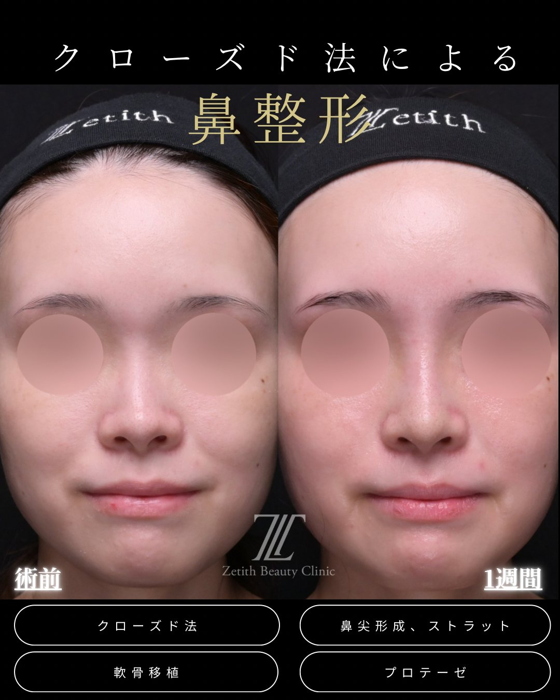
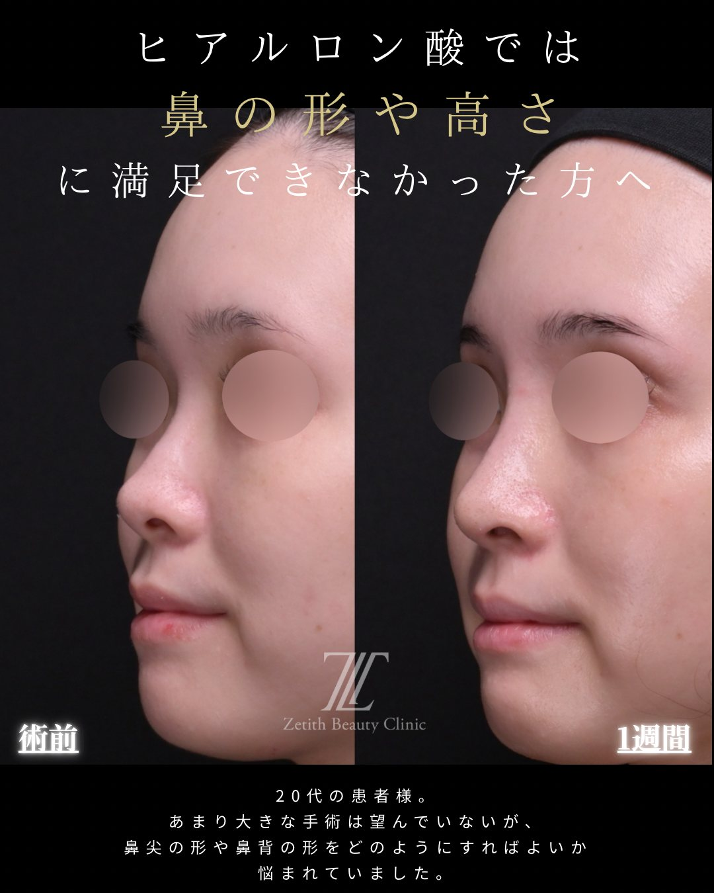
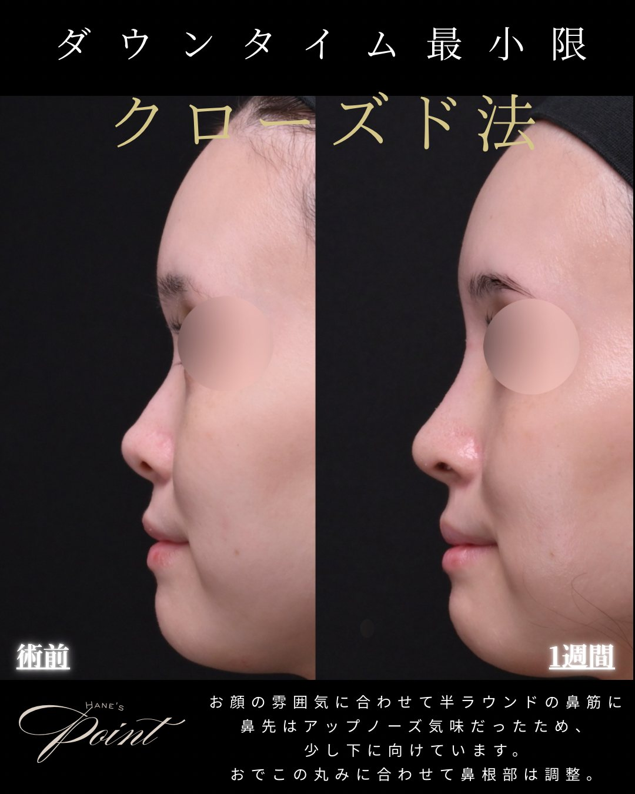
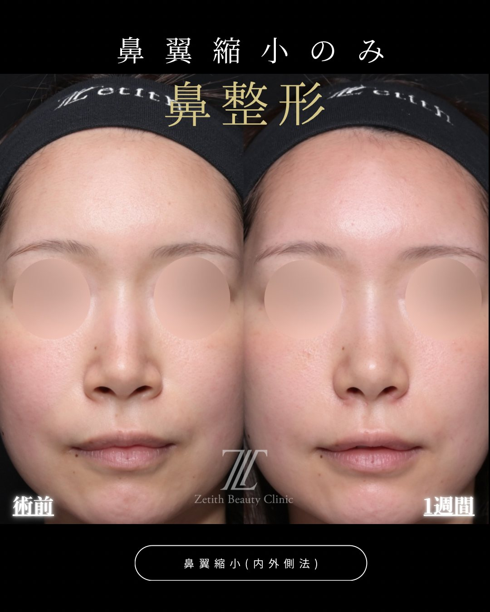
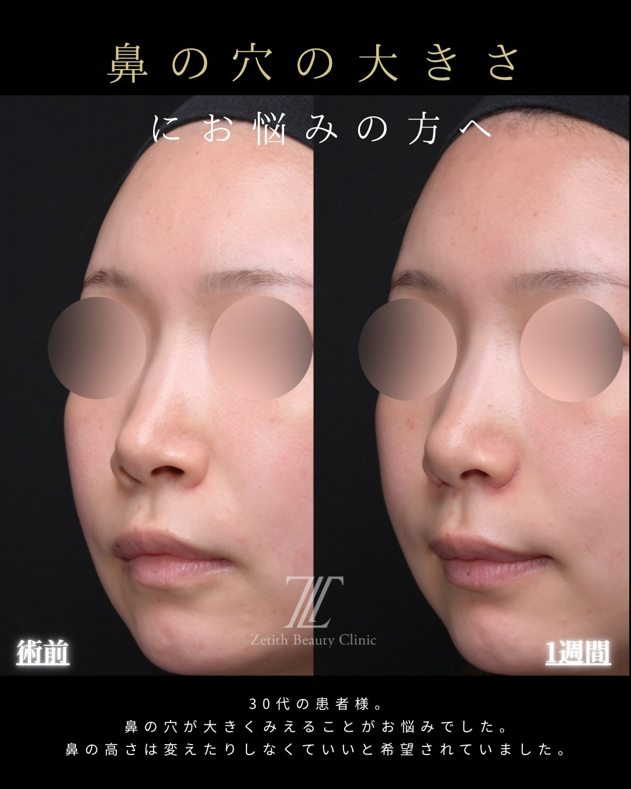
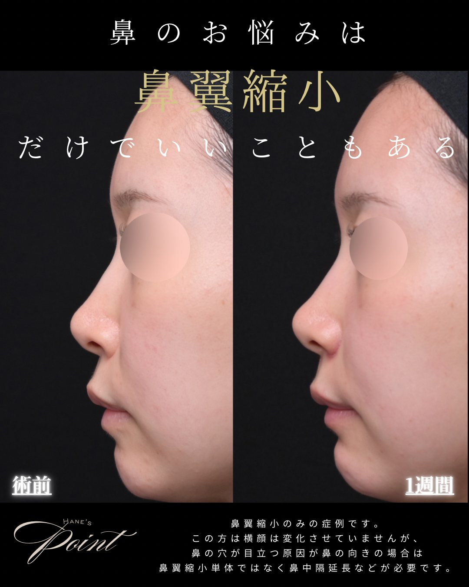

Section 01
鼻整形は「どこで・誰に」で変わる
同じ「鼻を整えたい」でも、原因の見極め・術式の選択・デザイン・手技によって仕上がりは大きく変わります。だからこそ、施術そのものより先に「どのクリニックで、どの医師に受けるか」が、失敗・後悔を避ける最大のポイントになります。
広告やSNSの完成イメージだけで決めてしまうと、「思っていた形と違う」「横顔が不自然」「修正が必要になった」といったことが起こり得ます。次章の7つのチェックポイントを、クリニック選びの物差しにしてください。
Section 02
失敗しない7つのチェックポイント
どこを見れば「信頼できるか」が分かるのか。当院が大切だと考える7つの軸を、理由とあわせて挙げます。
① 全方向（正面・斜め・横）の症例を公開しているか
鼻は横顔と斜めでこそ形が出ます。正面だけ・加工が多い症例ばかりのところより、横顔まで見せているクリニックのほうが、技術と仕上がりに自信がある目安になります。
② 執刀する医師が自分でカウンセリング・診察するか
カウンセラーだけが話を進め、医師は当日初めて会う——では、あなたの鼻に合った設計は難しくなります。執刀医本人が診て、デザインを決める体制かを確認しましょう。
③ 鼻整形の症例数・専門性
鼻は繊細でリカバリーの難しい部位です。鼻整形の経験・症例数が十分か、鼻を専門的に扱っているかは重要な判断材料です。
④ 素材の選択肢があるか（自家組織まで対応できるか）
プロテーゼ・保存軟骨・耳介軟骨・肋軟骨（自家採取）——必要な素材を状態に合わせて選べるか。「一つの素材・術式しかやらない」ところより、選択肢を持ち、素材で妥協しないほうが、無理のない設計ができます。
⑤ 傷への配慮とデザインの幅
傷を表に出しにくいクローズド法などへの配慮があるか。そして「自然も、しっかりした変化も」設計できるデザインの幅があるか。自然一辺倒でも、派手一辺倒でもなく、希望に合わせて設計できることが大切です。
⑥ 料金が「総額」で明確か
施術料だけでなく、麻酔・術前検査・お薬代などの別途費用まで含めた総額を、事前に提示してくれるか。あとから大きく増える見積もりは注意です。
⑦ リスク・ダウンタイム・他院修正まで説明するか
良い話だけでなく、リスク・副作用・ダウンタイム、そして万一のときの修正まで正直に説明してくれるか。ここを濁すクリニックは避けたほうが安心です。
Section 03
当院の症例（正面・斜め・横で公開）
チェックポイント①のとおり、当院は正面だけでなく斜め・横顔まで公開しています。横顔・斜めは"ごまかしにくい"角度だからこそ、実際の仕上がりを見ていただけます。各症例に施術内容・料金・主なリスク／副作用を明記しています。タブで角度を切り替えられます。
症例①｜鼻先が上向き・短鼻／クローズド法：鼻中隔延長

images/case-tiplift-front.jpg

images/case-tiplift-oblique.jpg

images/case-tiplift-side.jpg
- 施術内容
- クローズド法による鼻中隔延長
- 料 金
- ¥880,000〜（素材・構成により変動）
- 主なリスク・副作用
- 腫れ・内出血・左右差・鼻先の硬さ・後戻り・感染・仕上がりの個人差 等
- ダウンタイム
- 約1〜2週間
※ 正面・斜め・横の3方向を掲載。効果には個人差があり、リスク・副作用を伴います。自由診療（保険適用外）。
症例②｜鼻の丸み・鼻先の土台の弱さ（貴族手術を含む総合的な鼻整形）／クローズド法

images/case-kizoku-front.jpg

images/case-kizoku-oblique.jpg

images/case-kizoku-side.jpg
- 施術内容
- クローズド法：骨切り幅寄せ＋鼻尖形成＋軟骨移植＋ストラット＋貴族手術＋猫手術＋鼻翼縮小
- 料 金
- ¥980,000〜（複数術式の組み合わせ）
- 主なリスク・副作用
- 腫れ・内出血・左右差・感染・素材の位置ずれ・仕上がりの個人差 等
- ダウンタイム
- 約1〜2週間（写真は術後1ヶ月）
※ 30代の患者様。複数術式を同時に行った症例。正面・斜め・横の3方向を掲載（同意のうえ掲載／プライバシー保護のため目元を加工）。効果には個人差があり、リスク・副作用を伴います。自由診療（保険適用外）。
症例③｜鼻先〜鼻柱の付け根・口元の見え方（耳介軟骨によるクローズド法・鼻中隔延長＋猫手術ほか）

images/case-neko-front.jpg

images/case-neko-side.jpg

images/case-neko-side2.jpg
- 施術内容
- クローズド法：鼻中隔延長（耳介軟骨）＋猫手術＋貴族手術＋軟骨移植＋鼻尖形成＋鼻翼挙上
- 料 金
- ¥1,130,000〜（複数術式の組み合わせ）
- 主なリスク・副作用
- 腫れ・内出血・左右差・感染・鼻先の硬さ・仕上がりの個人差 等
- ダウンタイム
- 約1〜2週間（写真は術後1ヶ月）
※ 40代の患者様。複数術式を同時に行った症例。正面・斜め・横顔を掲載（同意のうえ掲載／プライバシー保護のため目元を加工）。効果には個人差があり、リスク・副作用を伴います。自由診療（保険適用外）。
症例④｜鼻筋の低さ（クローズド法：鼻尖形成＋軟骨移植＋ストラット＋自家組織隆鼻／耳介軟骨）

images/case-ryubi-front.jpg

images/case-ryubi-oblique.jpg

images/case-ryubi-side.jpg
- 施術内容
- クローズド法：鼻尖形成＋軟骨移植＋ストラット＋自家組織隆鼻（耳介軟骨）
- 料 金
- ¥780,000〜（構成により変動）
- 主なリスク・副作用
- 腫れ・内出血・左右差・感染・仕上がりの個人差 等
- ダウンタイム
- 約1〜2週間（写真は術後1週間）
※ 20代の患者様。自家組織（耳介軟骨）による隆鼻を含む複数術式を同時に行った症例。正面・斜め・横を掲載（同意のうえ掲載／プライバシー保護のため目元を加工）。効果には個人差があり、リスク・副作用を伴います。自由診療（保険適用外）。
症例⑤｜ヒアルロン酸で満足できなかった鼻（クローズド法：鼻尖形成＋ストラット＋軟骨移植＋プロテーゼ隆鼻）

images/case-ryubi-pro-front.jpg

images/case-ryubi-pro-oblique.jpg

images/case-ryubi-pro-side.jpg
- 施術内容
- クローズド法：鼻尖形成＋ストラット＋軟骨移植＋プロテーゼ（隆鼻）
- 料 金
- ¥680,000〜（構成により変動）
- 主なリスク・副作用
- 腫れ・内出血・左右差・感染・プロテーゼの位置ずれ・仕上がりの個人差 等
- ダウンタイム
- 約1〜2週間（写真は術後1週間）
※ 正面・斜め・横を掲載（同意のうえ掲載／プライバシー保護のため目元を加工）。効果には個人差があり、リスク・副作用を伴います。自由診療（保険適用外）。
症例⑥｜団子鼻（鼻先の丸み）／クローズド法：鼻尖形成＋軟骨移植＋ストラット

images/case-dango-front.jpg

images/case-dango-oblique.jpg

images/case-dango-side.jpg
- 施術内容
- クローズド法による鼻尖形成＋軟骨移植＋ストラット（団子鼻の改善）
- 料 金
- ¥580,000〜（構成により変動）
- 主なリスク・副作用
- 腫れ・内出血・左右差・感染・仕上がりの個人差 等
- ダウンタイム
- 約1〜2週間（写真は術後3ヶ月）
※ 10代の患者様（保護者同意のうえ掲載／プライバシー保護のため目元を加工）。正面・斜め・横の3方向を掲載。効果には個人差があり、リスク・副作用を伴います。自由診療（保険適用外）。
症例⑦｜鼻の穴が大きく見えるのが悩み（鼻の高さは変えず）／鼻翼縮小（内側法＋外側法）のみ

images/case-kobana-front.jpg

images/case-kobana-oblique.jpg

images/case-kobana-side.jpg
- 施術内容
- 鼻翼縮小（内側法＋外側法）のみ ／ 鼻の高さ・鼻先は変えていません
- 料 金
- ¥308,000（税込／内側法＋外側法）
- 主なリスク・副作用
- 腫れ・内出血・傷跡・左右差・後戻り・つっぱり感・仕上がりの個人差 等
- ダウンタイム
- 約1〜2週間（写真は術後1週間）
※ 30代の患者様（同意のうえ掲載／プライバシー保護のため目元を加工）。正面・斜め・横を掲載。効果には個人差があり、リスク・副作用を伴います。自由診療（保険適用外）。
Section 04
よくある失敗・後悔のパターン
実際に「もっと調べればよかった」と感じやすいのは、次のようなケースです。当てはまるクリニックは慎重に検討しましょう。
避けたいポイント
- 症例が正面だけ・加工が多い（横顔や斜めを見せていない）
- 医師がほとんど診ず、カウンセラーが施術を決める
- 「安さ」だけで選ぶ（総額・別途費用・内訳が不明確）
- リスク・ダウンタイムの説明がない／良い話ばかり
- SNSの完成イメージだけで、自分の鼻に必要な設計を確認していない
- 万一の修正に対応できるか確認していない
Section 05
カウンセリングで確認したいこと
迷ったら、カウンセリングで次の6つを聞いてみてください。答え方に、そのクリニックの姿勢が表れます。
- 私の鼻は、どの術式が必要？ その理由は？（原因から説明してくれるか）
- 使う素材は何？ なぜそれを選ぶ？（自家組織まで選択肢があるか）
- 総額はいくら？ 別途費用（麻酔・検査・薬）は？
- ダウンタイム・主なリスクは？
- 横顔・斜めの症例を見せてもらえますか？
- 万一、修正が必要になったら対応できますか？
Section 06
よくある質問
良いクリニックの見分け方は？
「正面だけでなく横顔・斜めの症例を公開しているか」「執刀する医師が自分で診察・デザインするか」「料金の総額とリスクを正直に説明するか」が分かりやすい目安です。この記事の7つのチェックポイントを物差しにしてください。
カウンセリングは医師がしてくれますか？
当院は院長が診察し、原因の見極めからデザイン・素材選び・リスク説明まで行います。カウンセラーだけで施術内容を決めることはありません。
症例写真はどこを見ればいいですか？
「横顔」と「斜め」を公開しているかを見てください。鼻は横顔・斜めで形が出るため、正面だけ・加工の多い症例より、全方向を見せているほうが信頼の目安になります。
安いクリニックは危険ですか？
安さ自体が悪いわけではありませんが、「総額・別途費用・内訳が明確か」「リスクや修正の説明があるか」で判断してください。安さだけを基準にするのは避けたほうが安心です。
他院で受けた鼻が不満です。相談できますか？
他院修正にも対応しています。状態によって方針が大きく変わるため、まずは診察させてください。詳しくは術式ガイドの他院修正もご覧ください。